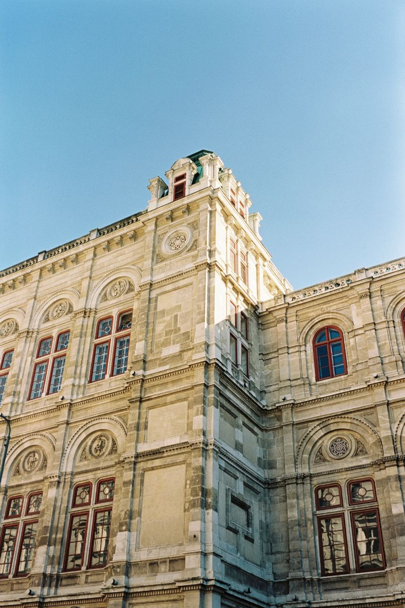

0004
0005
0006
 0007
00070012
0013
 0014
0014 0015
0015 0018
0018 0019
0019 0020
0020 0024
0024 0033
0033 0034
0034 0001
00010009
 0011
0011 0016
00160021
 0022
0022 0025
00250026
0027
 0028
0028 0029
0029 0030
00300031
0041
0042
 0003
0003 0008
0008 0017
00170023
 0035
0035 0036
0036 0037
00370038
 0039
0039
 0043
0043 0002
0002 0010
0010 0032
0032 0040
0040